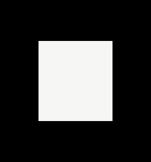

Rensselaer Polytechnic Institute
ECSE-4750 Computer Graphics, Spring 2000
Class 23
How does MapInfo Professional Integrate 3D
-
Currently MapInfo Pro was strickly a 2D program.
-
The Mapper window show layer in various 2D projections.
-
In a previous release false shading of elevation grids was introduced which
exagerated topological features to show relief and changing features.
-
In the latest release a 3D Map window was introduced which allows users
to view their Grids at a rotated angle.
-
Grids may consist of elevations, temperature, population density, etc.
-
Vector layers can be laid over the top to accurately represent roads and
boundaries with respect to the topological changes.
-
The main issue is how to create an interface that will be comfortable to
users who are experienced with only 2D controls.
-
The current implementation is a mix of 2D and 3D interators.
-
One major issue turned out to be the inconsitant support of OpenGL for
different hardware display adapters.
What is OpenGL?
-
OpenGL is a software interface to 3D and 2D graphics routines. OpenGL can
be used as an interface to graphics hardware or in some instances, be a
software only solution.
-
This interface consists of about 120 distinct commands, which you use to
specify the objects and operations needed to produce interactive three-dimensional
applications.
-
OpenGL is designed to work efficiently even if the computer that displays
the graphics you create isn't the computer that runs your graphics program.
-
This might be the case if you work in a networked computer environment
where many computers are connected to one another by wires capable of carrying
digital data. In this situation, the computer on which your program runs
and issues OpenGL drawing commands is called the client, and the computer
that receives those commands and performs the drawing is called the server.
The format for transmitting OpenGL commands (called the protocol) from
the client to the server is always the same, so OpenGL programs can work
across a network even if the client and server are different kinds of computers.
If an OpenGL program isn't running across a network, then there's only
one computer, and it is both the client and the server.
-
OpenGL is designed as a streamlined, hardware-independent interface to
be implemented on many different hardware platforms.
-
To achieve these qualities:
-
No commands for performing windowing tasks or obtaining user input are
included in OpenGL.
-
You must work through whatever windowing system controls the particular
hardware you're using.
-
With OpenGL, you must build up your desired model from a small set of geometric
primitive points, lines, and polygons. (A sophisticated library that provides
these features could certainly be built on top of OpenGL, we will investigate
this in detail).
How does OpenGL work?
-
Here is the order in which OpenGL performs the major graphics operations
necessary to render an image on the screen.
-
Construct shapes from geometric primitives, thereby creating mathematical
descriptions of objects. (OpenGL considers points, lines, polygons, images,
and bitmaps to be primitives.)
-
Arrange the objects in three-dimensional space and select the desired vantage
point for viewing the composed scene.
-
Calculate the color of all the objects. The color might be explicitly assigned
by the application, determined from specified lighting conditions, or obtained
by pasting a texture onto the objects.
-
Convert the mathematical description of objects and their associated color
information to pixels on the screen. This process is called rasterization.
-
During these stages, OpenGL might perform other operations, such as eliminating
parts of objects that are hidden by other objects (the hidden parts won't
be drawn, which might increase performance). In addition, after the scene
is rasterized but just before it's drawn on the screen, you can manipulate
the pixel data if you want.
Some basic terms:
-
Rendering
-
Conversion of primitives specified in object co-ordinates to an image in
the framebuffer. Rendering is the primary operation of OpenGL, it's what
OpenGL does.
-
Bitplane
-
A rectangular array of bits mapped one-to-one with pixels.
-
Framebuffer
-
All the buffers of a given window or context. Sometimes includes all the
pixel memory of the graphics hardware accelerator. The framebuffer is also
a stack of bitplanes.
A simple example:
-
Because you can do so many things with the OpenGL graphics system, an OpenGL
program can be complicated. However, the basic structure of a useful program
can be simple: Its tasks are to initialise certain states that control
how OpenGL renders and to specify objects to be rendered.
-
Example 1-1 renders a white rectangle on a black background, as shown in
Figure 1-1 .
Example 1-1: A simple OpenGL Program.
#include <whateverYouNeed.h
main() {
OpenAWindowPlease();
glClearColor(0.0, 0.0, 0.0, 0.0);
glClear(GL_COLOR_BUFFER_BIT);
glColor3f(1.0, 1.0, 1.0);
glOrtho(-1.0, 1.0, -1.0, 1.0, -1.0, 1.0);
glBegin(GL_POLYGON);
glVertex2f(-0.5, -0.5);
glVertex2f(-0.5, 0.5);
glVertex2f(0.5, 0.5);
glVertex2f(0.5, -0.5);
glEnd();
glFlush();
KeepTheWindowOnTheScreenForAWhile();
}
-
The OpenAWindowPlease() routine is meant as a placeholder for a
window system-specific routine.
-
The next two lines are OpenGL commands that clear the window to black:
glClearColor() establishes what color the window will be cleared
to, and glClear() actually clears the window. Once the color to
clear to is set, the window is cleared to that color whenever glClear()
is called.
-
The next OpenGL command used in the program, glOrtho(), specifies
the co-ordinate system OpenGL assumes as it draws the final image and how
the image gets mapped to the screen.
-
The next calls, which are bracketed by glBegin() and glEnd(),
define the object to be drawn in this example, a polygon with four vertices.
-
The polygon's "corners" are defined by the glVertex2f() commands.
As you might be able to guess from the arguments, which are (x, y) co-ordinate
pairs, the polygon is a rectangle.
-
Finally, glFlush() ensures that the drawing commands are actually
executed, rather than stored in a buffer awaiting additional OpenGL commands.
-
The KeepTheWindowOnTheScreenForAWhile() placeholder routine forces
the picture to remain on the screen instead of immediately disappearing.
Figure 1-1: Resultant image

OpenGL Command Syntax:
-
OpenGL commands use the prefix gl and initial capital letters for each
word making up the command name (recall glClearColor(), for example).
-
OpenGL defined constants begin with GL_, use all capital letters, and use
underscores to separate words (like GL_COLOR_BUFFER_BIT).
-
The seemingly extraneous letters appended to some command names (the 3f
in glColor3f(), for example) are necessary to allow the command
to be used with various type of data values.
-
The 3 part of the suffix indicates that three arguments are given;
another version of the Color command takes four arguments. The f
part of the suffix indicates that the arguments are floating-point numbers.
-
Some OpenGL commands accept as many as eight different data types for their
arguments.
Command suffixes
maping to ANSI C types:
Table 1-1: Command Suffixes and Argument Data Types
| Suffix |
Data Type |
C-Language Type |
OpenGL Type Definition |
|
b
|
8-bit integer |
signed char |
GLbyte |
|
s
|
16-bit integer |
short |
GLshort |
|
i
|
32-bit integer |
long |
Glint, GLsizei |
|
f
|
32-bit floating-point |
float |
Glfloat, GLclampf |
|
d
|
64-bit floating-point |
double |
Gldouble, GLclampd |
|
ub
|
8-bit unsigned integer |
unsigned char |
Glubyte, GLboolean |
|
us
|
16-bit unsigned integer |
unsigned short |
GLushort |
|
ui
|
32-bit unsigned integer |
unsigned long |
GLuint,GLenum, GLbitfield |
glVertex2i(1, 3);
glVertex2f(1.0, 3.0);
-
are equivalent, except that the first specifies the vertex's coordinates
as 32-bit integers and the second specifies them as single-precision floating-point
numbers.
-
Some OpenGL commands can take a final letter v, which indicates that the
command takes a pointer to a vector (or array) of values rather than a
series of individual arguments:
glColor3f(1.0, 0.0, 0.0);
float color_array[] = {1.0, 0.0,0.0};
glColor3fv(color_array);
-
The particular implementation of OpenGL that you're using might not follow
this scheme exactly; an implementation in C++, Java, or Ada, for example,
wouldn't need to.
|
?
|
How would C++, Java, or Ada remove these extra routine
definitions? |
OpenGL as a State Machine
-
OpenGL is a state machine. You put it into various states (or modes) that
then remain in effect until you change them.
-
The current color is a state variable. You can set the current color to
white, red, or any other color, and thereafter every object is drawn with
that color until you set the current color to something else.
-
The current color is only one of many state variables that OpenGL preserves.
Others control such things as the current viewing and projection transformations,
line and polygon stipple patterns, polygon drawing modes, pixel-packing
conventions, positions and characteristics of lights, and material properties
of the objects being drawn.
-
Many state variables refer to modes that are enabled or disabled with the
command glEnable() or glDisable().
-
Each state variable or mode has a default value, and at any point you can
query the system for each variable's current value using one of the four
following commands:
glGetBooleanv(), glGetDoublev(), glGetFloatv(), or glGetIntegerv()
-
Which of these commands you select depends on what data type you want the
answer to be given in. Some state variables have a more specific query
command (such as glGetLight*(), glGetError(), or glGetPolygonStipple()
).
-
In addition, you can save and later restore the values of a collection
of state variables on an attribute stack with the glPushAttrib()
and glPopAttrib() commands. Whenever possible, you should use these
commands rather than any of the query commands, since they're likely to
be more efficient.
-
Refer to this site for more information:
http://www.hp.com/unixwork/products/grfx/OpenGL/Web/Reference/glEnable.html
|
?
|
Why would this be more efficient? |
The OpenGL Programming
Guide Auxiliary Library
-
OpenGL contains rendering commands but is designed to be independent of
any window system or operating system. Consequently, it contains no commands
for opening windows or reading events from the keyboard or mouse.
-
The auxiliary library is intentionally simple, and it would be difficult
to build a large application on top of it. It's intended solely to support
the examples in the "OpenGL Programming Guide", but you may find it a useful
starting point to begin building real applications.
Window Management
-
Three routines perform tasks necessary to initialise and open a window
-
auxInitWindow() opens a window on the screen. It enables the Escape
key to be used to exit the program, and it sets the background color for
the window to black.
-
auxInitPosition() tells auxInitWindow() where to position
a window on the screen.
-
auxInitDisplayMode() tells auxInitWindow() whether to create
an RGBA or color-index window. You can also specify a single- or double-buffered
window. (If you're working in color-index mode, you'll want to load certain
colors into the color map; use auxSetOneColor() to do this.) Finally,
you can use this routine to indicate that you want the window to have an
associated depth, stencil, and/or accumulation buffer.
Handling Input Events
-
You can use these routines to register callback commands that are invoked
when specified events occur.
-
auxReshapeFunc() indicates what action should be taken when the
window is resized, moved, or exposed.
-
auxKeyFunc() and auxMouseFunc() allow you to link a keyboard
key or a mouse button with a routine that's invoked when the key or mouse
button is pressed or released.
Drawing 3-D Objects
-
The auxiliary library includes several routines for drawing these three-dimensional
objects:
-
sphere, octahedron, cube, dodecahedron, torus, icosahedron, cylinder, teapot,
cone
-
You can draw these objects as wireframes or as solid shaded objects with
surface normals defined. For example, the routines for a sphere and a torus
are as follows:
void auxWireSphere(GLdouble radius);
void auxSolidSphere(GLdouble radius);
void auxWireTorus(GLdouble innerRadius, GLdouble outerRadius);
void auxSolidTorus(GLdouble innerRadius, GLdouble outerRadius);
-
All these models are drawn centered at the origin. When drawn with unit
scale factors, these models fit into a box with all coordinates from -1
to 1. Use the arguments for these routines to scale the objects.
Managing a Background Process
-
You can specify a function that's to be executed if no other events are
pending for example, when the event loop would otherwise be idle with auxIdleFunc().
This routine takes a pointer to the function as its only argument. Pass
in zero to disable the execution of the function.
Running the Program
-
Within your main() routine, call auxMainLoop() and pass it
the name of the routine that redraws the objects in your scene. Example
1-2 shows how you might use the auxiliary library to create the simple
program shown in Example 1-1 .
Example 1-2: A Simple OpenGL Program Using the Auxiliary Library:
simple.c
/* Includes required */
#include <GL/gl.h
#include "aux.h"
/*
* Clear the screen. Set the current color to white.
* Draw the wire frame cube.
*/
void display(void)
{
glClearColor (0.0, 0.0, 0.0, 0.0);
glClear(GL_COLOR_BUFFER_BIT);
glColor3f(1.0, 1.0, 1.0);
glOrtho(-1.0, 1.0, -1.0, 1.0, -1.0, 1.0);
glBegin(GL_POLYGON);
glVertex2f(-0.5, -0.5);
glVertex2f(-0.5, 0.5);
glVertex2f(0.5, 0.5);
glVertex2f(0.5, -0.5);
glEnd();
glFlush();
}
/* Initialize shading model */
void myInit(void)
{
glShadeModel (GL_FLAT);
}
/*
* Called when the window is first opened and whenever
* the window is reconfigured (moved or resized).
*/
void myReshape(GLsizei w, GLsizei h)
{
glMatrixMode(GL_PROJECTION);
glLoadIdentity();
glFrustum (-1.0, 1.0, -1.0, 1.0, 1.5, 20.0); /* transformation */
glMatrixMode (GL_MODELVIEW); /* back to modelview matrix */
glViewport (0, 0, w, h); /* define the viewport */
}
/*
* Main Loop
* Open window with initial window size, title bar,
* RGBA display mode, and handle input events.
*/
int main(int argc, char** argv)
{
auxInitDisplayMode (AUX_SINGLE | AUX_RGBA);
auxInitPosition (0, 0, 500, 500);
auxInitWindow (argv[0]);
myInit ();
auxReshapeFunc (myReshape);
auxMainLoop(display);
}
Compilling on RCS
-
There is an example Makefile in the VisClass/apps directory which can be
used as a template for future assignments.
Example 1-3: Example Makefile for simple.c
#
# Sample Makefile for compilling the sample code for the
# Advanced Computer Graphics and Data Visualization 35.6961 (Fall 1995)
#
# Copy this to the directory where the program resides and use
#
# make progname
#
# The progname would be the prefix of the source file you generated.
# Like if your source file was hw1.c, the above line would read:
#
# make hw1
#
# The make utility would automatically look for something with a suffix
# it understood and would find hw1.c. There are built in rules which
# tell it how to compile c source.
LIBS= -lGL -lGLU -laux -lXm -lXt -lX11 -lm
CFLAGS=-DAIXV3 -I/usr/include/GL
CC=cc
simple: simple.o
$(CC) $(CFLAGS) -o $@ $? $(LIBS)
lorenz: lorenz.o
$(CC) $(CFLAGS) -o $@ $? $(LIBS)
clean:
/bin/rm -f *.o
Example 1-4: Results of the build process.
% make simple
cc -DAIXV3 -I/usr/include/GL -c simple.c
cc -DAIXV3 -I/usr/include/GL -o simple simple.o -lGL -lGLU -laux -lXm -lXt -lX11 -lm
%
-
Obviously there should be no warning or error messages as a result of the
build.
Copyright © 1999-2000, Thomas D. Citriniti, citrit@rpi.edu
ECSE Dept., Rensselaer Polytechnic Inst., Troy NY, 12180 USA